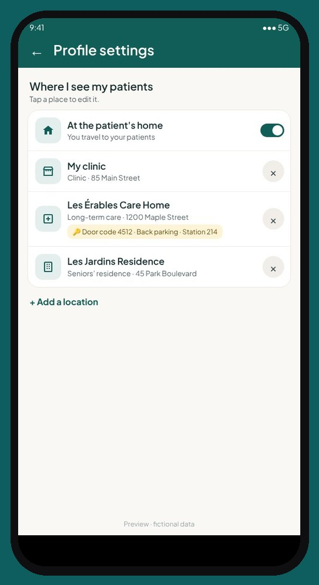
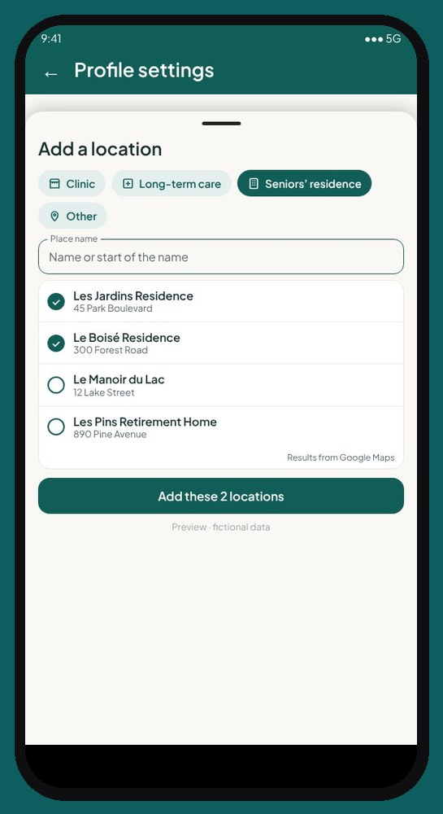

CliniQ Pro app tour, screen by screen
CliniQ Pro, the software for self-employed health professionals, in home care or at a clinic: every screen of the app, what you see, what you can do there and why it's there. The patients shown are fictional.
Home

On the screen
The date, a “Hello” with your first name and the weather, the “To do” card, the “Open calendar” button, then “My day”: today's appointments, in order.
What you can do
- Tap an appointment to open its details.
- Call or text the patient, or start directions in your GPS, in one tap.
- Check “Patient absent”: your trip is counted, the app helps you call back or find another time, and nothing is erased.
- Open “To do”: notes to finish, consents to ask for, appointment reminders, mileage, assessments to review.
- See today's locations (long-term care, residence, clinic) grouped on one card, with the number of patients, directions and your access note (door code).
Why
Between two patients, you open the app and know right away where to go and what's left to do, without digging through a menu.
The ☰ menu

On the screen
The home screen menu, which leads to everything else in the app.
What you can do
- “Patients”: your patient list, with a search by name.
- “Search”: find a patient, an appointment or an invoice in one place.
- “Add a patient”: the new patient's file, with their consents and where you see them.
- “Sterilization”: your sterilization log (if you sterilize instruments).
- “Finance”: your income, amounts to collect, the sales tax report, expenses, mileage and “For my accountant”.
- “My services and products”: your services with their price and length, and the products you sell.
- “Settings”: your profile, calendar and schedule, security, language, privacy (details below).
- “Help and feedback”: every question and answer, an assistant that answers from the help, and a place to suggest an idea.
- “Contact support”: a message that comes straight to us; the reply comes by email.
- “Screenshots”: a switch that allows screenshots until the app is closed (on Android).
- “Log out”, and at the bottom, the app's version number.
Why
Everything is one tap from home. Screenshots are blocked by default to protect your patients' information.
The schedule

On the screen
Your appointments by Day, Week or Month. Statutory holidays in your province are shown, and in Month view, the days you don't work according to “My schedule” are greyed out.
What you can do
- “Find a time slot”: enter the city, the length and, if you work in more than one place, the location. The app suggests times that account for real driving, filling the days you've already started first.
- Tap a free slot directly, then choose: “Patient appointment”, “Business activity” (no patient: training, meeting…) or “Unavailability” (vacation, personal appointment, blocked day).
- Tap an appointment to open, move or cancel it; tap an unavailability or an activity to change it.
- Confirm the trip for a completed business activity, so it counts in your mileage.
Why
In home care, an appointment is also a trip. The schedule places your patients without zigzagging, and an unavailability keeps the app from suggesting a time when you're not free.
Your work locations


On the screen
In Settings → “My profile”, the “Where I see my patients” section: “At home” and each of your locations (clinic, long-term care home, residence), with its address and access note.
What you can do
- “Add a location”: search for it by name or address in Google Maps, then add an access note (door code, parking, unit, nursing station phone).
- “My clinic is at my address” if you see patients at your home.
- Remove a location from your list: it's never erased, past records and visits keep it.
- In “My schedule”, give each day its location and hours.
Why
Business mileage depends on the location: trips between home and your clinic are personal (CRA rule), trips to a long-term care home, a residence or a patient's home are business. And “Find a time slot” knows where you are each day.
Appointment details

On the screen
The whole appointment on one page: the patient, the time, the type of care and length, the status (to document, not billed), consents, the assessment, pouches, photos and the note.
What you can do
- Move, cancel (the app asks whether you went there, so the trip counts) or delete an appointment created by mistake.
- View or update the patient's health assessment.
- Take care photos and write the visit note.
- Record missing consents.
- Bill the visit: choose the service, add a product if needed, the payment method, then issue the receipt.
- “Correct the payment” if the payment didn't go through or the method was wrong: the receipt is cancelled and replaced, never changed.
Why
At the patient's, you do everything without changing pages: care, documentation, billing.
The patient record

On the screen
The name, status (active, inactive, archived, deceased), file number, contact information, where you see the patient, the responsible person if any, consents and a timeline of everything that happened.
What you can do
- Call, text or get directions to their home.
- Change where you see them, add a second number or a responsible person (for example the son or daughter who pays and receives the receipts).
- Record each consent (opening the record, care, photos, sharing with a third party, text reminders), with the date and who gave it.
- Open a visit, a note or a document from the timeline.
- Change the patient's status: they're never erased.
Why
The complete record is in your pocket, and every time it's opened is logged in the access log, as Quebec's Law 25 requires.
The record menu

On the screen
The “Add” button at the top of the patient record.
What you can do
- “Note in the record”: information outside a visit (call from the patient or a family member, hospital stay, return home, death, refusal of care).
- “Late entry”: complete or correct a past visit, with the reason.
- “Document received”: file a care plan, an order or a report.
- “Copies of the record”: print or share the full record, or a statement of all their receipts for insurance, and see copies already given.
- “Deleted items”: recover a draft or a photo removed by mistake.
Why
Each piece of information goes in its place, with its date, and every copy given is logged.
The clinical note

On the screen
The visit note, written from your template, then finalized and signed.
What you can do
- Start from your note template, or write with the note assistant: you dictate or type what's out of the ordinary, it suggests the note following your template, and you use it or correct it.
- Dictate with your phone keyboard's microphone.
- Add traceability for the sterilized pouches used.
- “Finalize and sign” after reviewing.
Why
A finalized note never changes: any correction is made with a dated late entry. The patient's name and contact details are removed before anything is sent to the assistant. The draft saves itself, even without a connection.
The receipt

On the screen
The PDF receipt, with your contact details, your tax numbers if applicable, the services, taxes and total.
What you can do
- Print it on the spot, or send it by email or text: if the patient has an email in their record, it's already filled in.
- Correct a payment: the old receipt is marked “CANCELLED” and replaced, and both stay in the record.
Why
The patient leaves with their receipt. Invoices are numbered with no gaps, and taxes are calculated according to your profile.
Expenses

On the screen
Adding an expense: the receipt photo, date, amount, category, merchant and taxes.
What you can do
- Take a photo of the receipt; the app can read the amounts for you.
- Check the suggested category, then confirm.
- Get a warning if a similar expense is already recorded.
- See all the year's expenses in “My expense receipts”, and count only the business share of a mixed invoice.
Why
No more shoebox: each receipt is filed the moment you get it.
Mileage

On the screen
Your kilometres for the month and the year, a card for each vehicle and the travel log, day by day.
What you can do
- Take a photo of the odometer once a month.
- Open a day to see each trip: the patient is shown by file number, never by name.
- Say whether a doubtful trip counts for work, and confirm a day.
- Add another vehicle, or mark a vehicle as sold or returned.
Why
Trips are calculated from your appointment addresses: nothing to write down in the car, and a log ready for tax time.
For your accountant

On the screen
The year's totals, sorted by income tax return line, with no patient names.
What you can do
- Choose the year and check the totals: income, taxes, expenses, vehicle by your business-use percentage.
- Enter your business share once for expenses shared with your home (cell phone, home office).
- “Send to my accountant”: a PDF ready to share.
- In “Finance”, the monthly, quarterly or yearly “Sales tax report”, if you're registered for sales tax.
Why
Your accountant gets figures ready to use, and anything missing is flagged instead of guessed.
Sterilization

On the screen
For those who sterilize their instruments: the cycle log, and in each appointment, the pouches used for that patient.
What you can do
- Record a cycle: each pouch gets its number, to write on it.
- Record spore tests and their results.
- In the appointment, check the pouches used, or scan them with the camera.
- If a test is positive, see the recalled pouches and the patients concerned.
Why
Each instrument is linked to the patient: the day you're asked, the proof is ready. If you don't sterilize, this part stays hidden.
Settings
On the screen
☰ menu → “Settings”: one card for each setting.
What you can do
- “My profile”: name, title, type of practice, professional order and licence, logo and signature, billing and taxes, note style, and “Where I see my patients”.
- “Calendar settings”: starting address, maximum patients per day, and “My schedule” (for each day, the location and hours, a usual week or a specific week).
- “My services”: your services with their price, length and taxes.
- “Text message appointment reminders”: one switch; the text goes out on its own 24 hours before, only to patients who agreed.
- “Import my patients” from an Excel or CSV file from your old software, and “Export my patients”.
- “Security”: unlock with your fingerprint, two-step verification with a 6-digit code, log out your other devices. The app locks itself after a while without being touched.
- “Langue / Language”: French or English.
- “Privacy and rules”: privacy policy, terms of use, information for your patients, privacy incident register, access log, and “Delete my account”.
Why
You set everything once. On first start, the “Getting started” steps guide you one at a time, and any step can wait.
Help and support
On the screen
☰ menu → “Help and feedback” and “Contact support”.
What you can do
- Search for an answer by word (invoice, odometer, cancel…) or browse questions by topic.
- “Ask my question”: an assistant answers from the app's help.
- Suggest an idea and follow the reply to your requests in “My requests”.
- Contact support: the reply comes by email.
Why
The answer is in the app, right when you need it. Never write a patient's name there.
Launching January 1, 2027
See the app screen by screen, then reserve your spot: we'll write to you as soon as it opens.
A question? soutien@cliniqpromobile.ca
Features
- Patient records and notes
- Receipts and invoices
- Automatic mileage
- Expenses and accountant
- Sterilization log
- Home care services, all in one
- Questions and answers
- Pricing